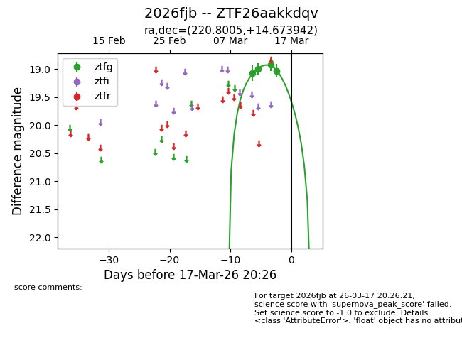
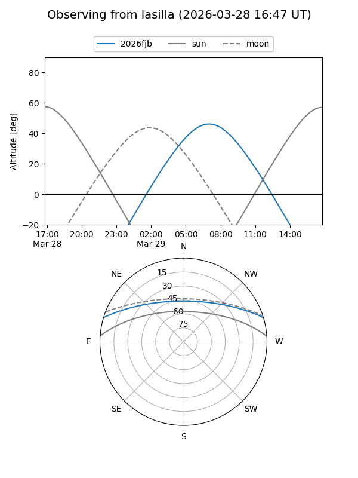
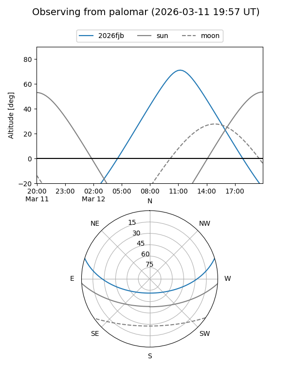

2026fjb
Target 2026fjb at 2026-03-17 20:29
Aliases and brokers:
FINK: link
Lasair: link
ALeRCE: link
TNS: link
YSE: link
alt names
ZTF26aakkdqv (ztf,fink_ztf)
2026fjb (tns,yse)
Coordinates:
equatorial (ra, dec) = 220.8005,+14.67394
equatorial (HMS+DMS) = 14:43:12.11,+14:40:26.19
galactic (l, b) = (13.0145,+61.17623)
Flags:
Photometry:
last ztfg=19.03
4 ztfg detections
Lightcurve

Visibility


Additional plots